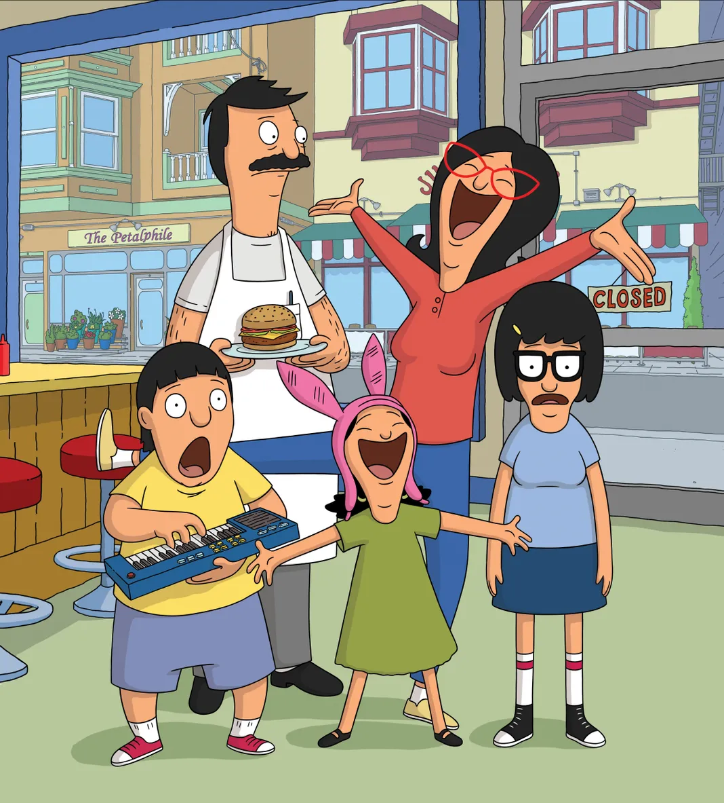
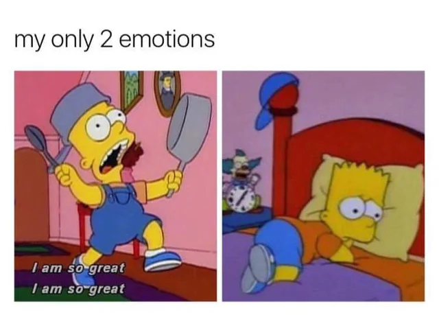
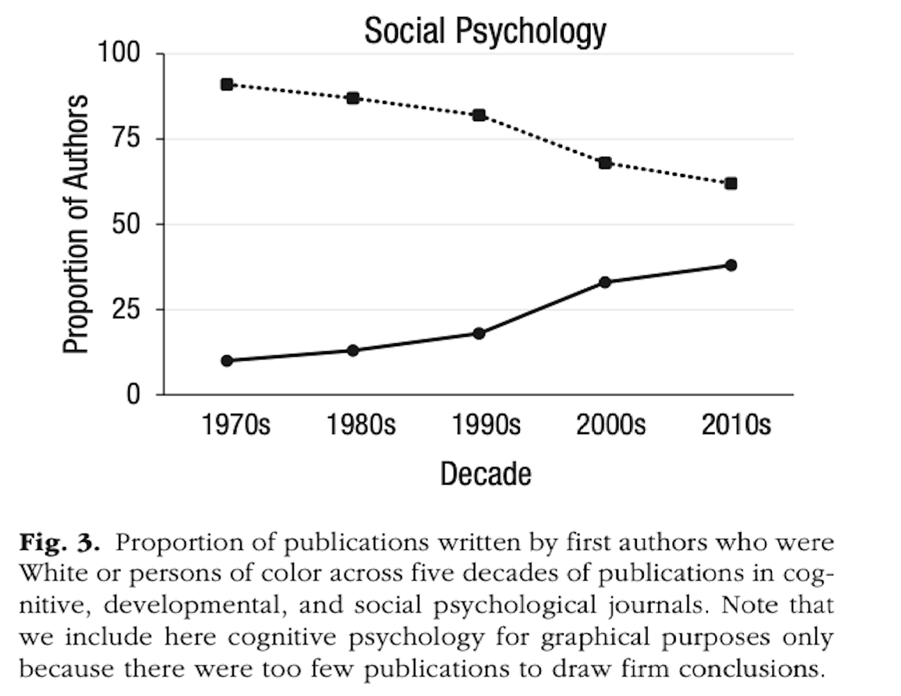
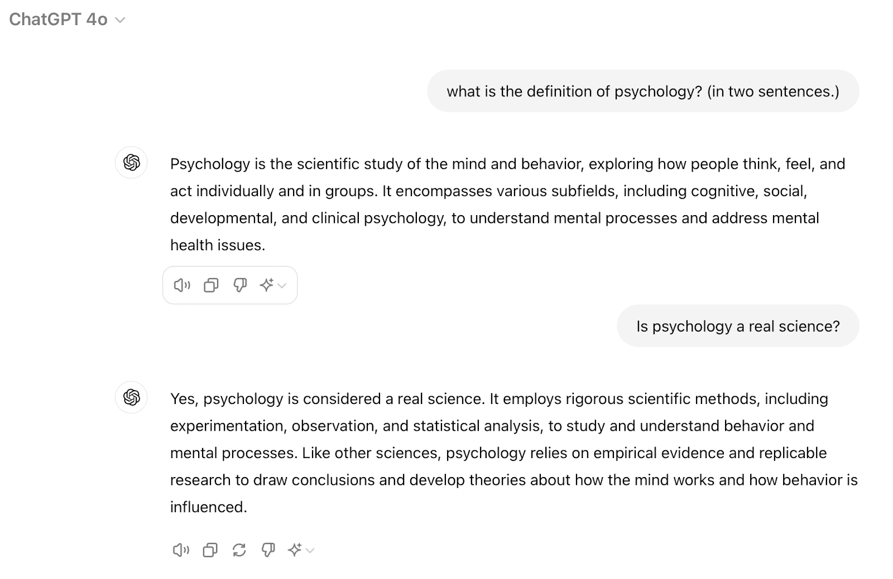
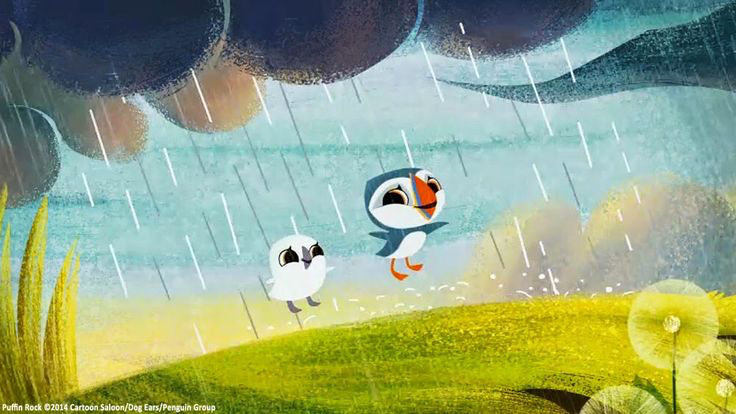
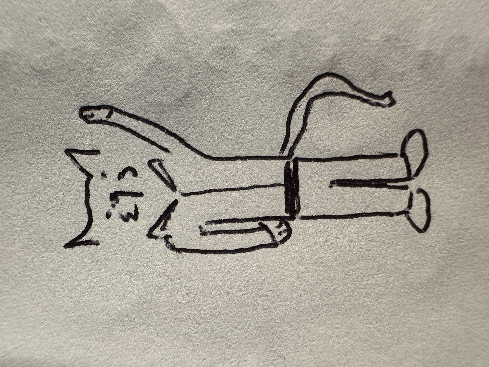

Why Statistics?
In this week’s reading, you’ll learn why students like you are required to learn the statistics, programming language, and research methods required of modern psychology.
Read this document and watch the videos.
Download R and RStudio (two separate programs) or set up a free account with posit.cloud
Take Quiz 1 (on our course page).
Part 1 : Why Statistics in Psychology?
As y’all know, this class is a requirement for students who want to be psychology majors. This is exciting for me (your professor), and probably some students too. However, over the years I have learned this can be frustrating and stressful for students who wonder why-the-flip they are required to take a math class when all they just want to learn about people (or other non-human animals), ya know!??!
I agree that people (or non-human animals) are interesting. And we all have this interest in people (or non-human animals) because we are complex1. While people are similar in many ways, we also differ in radical ways; from superficial features like age and race, to more complex ways like our personality or emotions, to highly specific behaviors such as whether all students in the class are reading these words or not, or how bored or excited (or any emotional experience) students are while reading these words.
1 One of the reasons I love teaching in the Bay Area is y’all are hella complex.
I hope that you have an interest in people (or non-human animals), and that this class helps you learn how to think about those interests through a psychological, and statistical lens. You don’t always need this lens - and as we will discuss there can sometimes be dangers in viewing people through this lens - but it’s useful to be able to wear these “stats glasses” when needed.
Statistics as a Language
Statistics is a language that scientists use to describe this complexity. While psychology uses this language to better understand differences in people (or non-human animals), other scientific disciplines focus on their own domains; physicists seek to understand differences (and similarities) in matter and energy, chemists seek to understand differences (and similarities) in elements and compounds, botanists seek to understand differences in plants, and economists seek to understand money.
Like all languages, statistics has vocabulary - words that have shared meaning, and allow us to understand what we are talking about.
Variables and Variation
Variation is at the heart of statistics, and is the specific vocabulary that researchers use to describe the differences, change, and complexity that defines life.
| Between-Person Variation describes how individuals differ from each other. Think about ways that you differ from others; not everybody wears glasses, has the same level of silliness / seriousness / desire to cause mischief / fascination with horses. |  |
| Within-Person Variation describes how one individual changes over time or across different situations. Think about the person you are today - are you exactly the same as you were yesterday? A year ago? You’ve changed (varied) in ways both small (hunger, exhaustion, number of words you’ve read for this class) and large (personality, love interests, identity, etc.) |  |
| No variation would describe a situation in which everyone is exactly the same. I can’t think of too many situations where there is no variation; let me know on Discord if you can think of one? And while there’s no theoretical limit to the amount of variation that there can be, one major task of this class will be to learn to quantify the amount of variation that we observe in our role as psychologists. | 🌞🌞🌞 🌞🌞🌞 |
A Variable is a label for some psychological phenomenon that has variation. I’m not sure where I first heard this, but psychologists often focus on what they call the “ABCs”.
A is for Affect = the emotions that you feel.
B is for Behavior = the actions that you do.
C is for cognition = the thoughts you have.
These are not rigid categories, and psychologists often debate the definitions of these terms. But they can be useful ways to think about how to think about people, and help break down a complex phenomenon into more specific components.
Practice : Variables and Variation
For example, think about how affect, behavior, and cognition might be relevant if I ask you to think about an upcoming exam (your first exam is in just a few weeks!)
| highlight the cells below to see my ideas / check your understanding | |
| Affect Example | the feeling of anxiety or dread you have thinking about being assessed, or maybe a feeling of excitement about the opportunity to demonstrate your hard work / effort / knowledge! |
| Behavior Example | immediately checking your calendar to see when exams are; or maybe avoiding your classes with a nice procrastination session on the ol’ infinite scroll machine. |
| Cognition Example | thinking about all the work you have to do; wondering why the professor would choose this example when he could have thought about the ways that affect, behavior, and cognition would be triggered when you see a puppy or kitten or something like that… |
What’s Language?
Statisitcs, like spoken languages, is a combination of vocabulary, rules, and culture that people use to communicate with each other.
Vocabulary. Equations like “the mean” or “standard deviation” or “cronbach’s alpha” or “p-value” are precise vocabulary terms that define some feature of variation. Some of these vocabulary words are easier to understand and remember than others, and like all languages, sometimes people disagree on the definition, and sometimes misuse these words.
Grammar and Syntax. The way we organize words also matters when learning languages. Saying “the professor graded the students“ has a very different meaning than “the students graded the professor”, even though these share the exact same words. Statistics (and research methods) also requires precision in the way we organize the ideas, terms, and processes. We’ll learn more about this as we discuss the scientific method (a highly structured and organized approach to doing research), but also as we learn how to navigate doing data analysis.
Cultural Immersion. A good language class will also help students to understand the ways that the language is connected to people, places, and history2. In this class, we’ll think about the ways we can immerse ourselves in the culture of statistics and research methods, from the cultural practices that inform which methods or tools to use, to the ways that the culture of statistics and research might needlessly create barriers for certain types of people or studies.
Practice and Past Experiences. And yes, in order to gain fluency in a language, you need to practice! Attendance and regular engagement with this class will ensure that you are able to get the practice that you need. It’s also good to note that people differ in terms of their past experiences with computers and math, and are bringing those experiences (for better or worse) with them into this class.
2 And usually food, though I’m not sure if there’s cultural food norms about statistics or research methods.
Culture in Statistics : Me-Search
Hiya folks! Everyone’s favorite Open-Source Mickey Mouse here. I’ll be popping up in the book from time to time to critically engage with the idea that statistics has a culture that is socially constructed by people like you!

All psychologists are interested in questions sparked by their own observations or experiences. This is sometimes called “me-search” - the idea that a person’s research interests reflect their own experience.
Me-search can be an important way for researchers to use their statistics and research methods training to address questions and issues that are relevant to their lives and communities.
Below are a few examples of research questions that are related to a person’s real-life experiences.
| Real Life Experience | Research Question |
| A researcher develops vision problems due to his studies of light, and had to live in a completely darkened room, where he became completely isolated from most of reality.3 | Does reality exist, or can it only be known through our perceptions? |
| A black graduate student at the University of Chicago realizes that white people cross the street to avoid him, and finds himself whistling classical music to signal that he does not fit their negative stereotypes of a black male.4 | How do people respond and react to others’ negative stereotypes? |
3 This happened to Gustav Fechner, one of the early psychologists who pioneered the study of psychophysics, which tested theories that our perceptions do not always match reality (seen in many examples, such as the dress). FWIW I see it as blue and black.
4 This anecdote (as reported here) inspired Claude Steele’s research on stereotype threat.
Me-search also serves as a form of potential bias in research - not only will a researcher’s own biases and beliefs influence the way they conduct research, but the types of questions that are asked will be influenced by the types of people doing research.
For example, a survey of over 26,000 research articles in psychology documented just how rarely the topic of race is studied.

As we’ll discuss throughout this class, life is complex and there is never one explanation for any phenomenon. However, it’s important to note that psychology as a field has historically been dominated by white authors (researchers who write scientific papers) and white editors (researchers who decide what papers get published or not).

These trends are important to reflect on, because they reveal a bias in who becomes a psychologist, and what types of questions these researchers are interested in pursuing.
It’s also a goal of this class to not only highlight the important contributions of non-white researchers and statisticians, but also make sure that all students in this diverse classroom feels empowered to use statistics, research methods, and R skills to ask (and answer) research questions that matter to them!5
5 This is the purpose of your final project! We’ll talk more about this throughout the class.
Psychology as a REAL SCIENCE ™
Psychology uses statistics because, in part, it wants to establish itself as a real science, like physics and chemistry. You don’t have to take my word for it, just look at the definitions of some common sources of psychological knowledge - introductory textbooks:
“Today, we define psychology as the science of behavior and mental processes.” (Myers, 2011)
“…the science of behavior and the mind.” (Grey, 2010)
“…the scientific study of mind, brain, and behavior.” (Gazzaniga, 2010)
“…We now define psychology as the science of behavior and mental processes.” (Myers & DeWall, 2018)
I’m probably showing my age looking to textbooks, so let’s check in with ChatGPT6 to see whether the algorithmic summary of large piles of data suggests that psychology is, in fact, a “real science” :
6 See the syllabus for the course ChatGPT policy. You may also be interested to read on the ethical and environmental issues surrounding this emerging technology.

Perhaps more authoritatively, the American Psychological Association (APA) confirms that psychology is, “the study of the mind and behavior…a diverse scientific discipline comprising several major branches of research.” (APA, 2024).
The consistent emphasis on science (and “rigorous” methods!) in these definitions is an attempt to elevate psychology through language to the status of other “hard” sciences, like physics and chemistry. But inclusion of the term “science” also seeks to differentiate psychology from its less scientific heritage and past, defend itself from accusations from other scientists / talking heads (if not some of your friends in STEM majors…or parents) that it is not actually REAL SCIENCE ™.
What is Science? Prediction (and Error)
One of the most important goals of science is to form predictions, and then use these predictions in order to influence outcomes (a form of power).
A prediction is an educated guess you have about the future. Educated means that the guess comes from some knowledge (either your experiences, beliefs, something you learned in a textbook, or the results of a scientific study). A prediction can have two outcomes :
Valid : your prediction is right
Error : your prediction is wrong.
Of course, things are rarely as simple as “right” or “wrong”, and a large part of this class will be learning how to quantify exactly how much error there is in our scientific predictions.
As an example, let’s look to the stars.
Astronomers have developed knowledge about celestial bodies - gravity, orbits, mass (I know very little about this). But I trust this science because astronomers are able to use it to make very valid predictions about giant space rocks and when they will come close to the earth.7 I can use this knowledge to plan a stargazing trip, or plan to watch all the rich people leave earth when the “big one” comes for the rest of us. |
7 You can see when scientists predict Halley’s comet to come closest to earth here. While this is fairly accurate, I’ve seen the exact prediction change over the years - there is still some error in this prediction.
As another example, on the day I’m writing these words, I do not predict that it will rain outside. I am making this prediction based on the following information :
it did not rain yesterday
it is not currently raining
I live in Oakland, where it rarely rains in August.
the air doesn’t have that feeling of rain; that smell.
I looked at the weather forecast app and it said we had a week of sunny weather ahead.
Nobody was carrying an umbrella today.
there are no clouds.
Because I predict it will not rain, I’m not too worried that the tarp is not covering my bike locked outside. Of course, my prediction could be wrong.
 It sometimes rains when sunny, as on Puffin Rock, where we’ll be here come rain or shine.
For our first lecture, start thinking of some predictions that you have made. What knowledge informed the prediction? Did you use this prediction to influence your future behavior in some way? What kinds of predictions do psychologists make? We will chat more about these ideas in class :) but it’s a core focus on why psychologists use predictions.
And so, here we are. In this document, in this required class for the psychology major, learning how to DO REAL SCIENCE. With statistics.
Linear Models to Organize Our Predictions
The linear model a simple formula that helps researchers to make, and quantify, their predictions. We will talk much more about linear models in our class - they are one of the most important concepts we will cover and a foundation of modern statistics - but for now let’s just focus on the basics :
A linear model takes the following form: 8
8 I can already feel some of y’alls math anxiety rising across time and space. But remember, stats is just a language with some vocabulary we need to learn.
\[ DV \sim IV_1 + IV_2 + ... + IV_k + \epsilon \]
Below is a description of terms in the model :
DV = dependent variable. This is the variable that you want to predict. It’s up to the researcher what variable is the dependent variable. More complicated models can have more than one DV, but for this class we will just focus on one DV at a time.
IV = independent variable. This is a different variable that you think will help you make predictions. Again, it’s up to the researcher to choose what variables they will include to try and make predictions of the DV.
k = any number. This is a way of saying that there can be many IVs. Life is complex, and so in order to predict one variable, we will need to use information from lots of other variables.
~ = a squiggly line / tilde. I like to use the squiggly line to reinforce the idea that our model is uncertain and squiggly (this is not an exact prediction where an equal sign would be used). R also uses the tilde for defining a model, so it’s nice to start practicing stretching our pinkie finger to reach that upper left corner of the keyboard.
\(\epsilon\) = error = this term always concludes our written model, and accounts for the many other reasons why our predictions might be wrong. This could be because we haven’t included certain variables that are important to make predictions (either because we can’t measure them in our study, don’t think they are important enough to study, or don’t know that we should study them), or because we are measuring our variables with some amount of error9.
9 We will learn more about measurement error in Chapter 4.
For example, I could write out my prediction about rain as the following linear model :
- rain ~ clouds + umbrellas + weather app status + smell + air pressure + season + location + temperature + error
We read a model as : “the DV is a function of…” or sometimes “the DV depends on…”. So I’d read this model as “rain is a function of clouds, umbrellas, the weather app status…etc.” And it’s good practice to leave the variables neutral (e.g., just “clouds”, not “storm clouds”).10
10 Later we will talk about ways to account for the fact that more umbrellas increases the chance it will rain in our model.
Error in this model would represent the fact that I haven’t accounted for some important variables that we know we should include (like humidity, coastal pressure systems, or palnetary waves), the fact that some of my variables were probably measured with error (was no one really carrying an umbrella???), and the fact that there are some things that we don’t know about rain, and what predicts it (this is what weather scientists are trying to learn more about.)
Once we add numbers and data to a linear model11, we can quickly see :
11 We will get to this in Chapter 6!
which variables allow us to make the best predictions, and which variables do not improve our predictions (e.g., is the number of umbrellas others are carrying a good predictor of whether it’s going to rain or not?)
the direction of the relationship between each IV and the DV (e.g., is it that more umbrellas = more rain, or more umbrellas = less rain?)
the amount of error in our predictions (e.g., how good, exactly, is this model at predicting the rain?)
Practice Writing A Model
Imagine a researcher wants to better understand why people differ in happiness, and believes that playing music, drinking more water, and eating ice cream sandwiches are important factors to consider. How would you write this out as a linear model?
happiness ~ music playing + water intake + ice cream consumption + error
For this model, I’ve organized the focus of the research question on the left-hand side and listed the three other variables to the right, using neutral descriptions (e.g., ‘water intake’ rather than ‘drinking more water’). I also included error at the end of my model to account for the fact that some people who play music, drink water, and eat ice cream are, in fact, not happy. I also didn’t add other varibles that might be related to happiness, since these were not part of the researcher’s statement.
Part 2 : Why R?
This semester, we will also learn how to use the computer programming language R to work with data, conduct analyses, and make graphs. R can be intimidating to work with at first, and is more confusing than it needs to be sometimes (as you’ll quickly find out…), but I promise you will learn!12 It’s totally okay (and expected) for you to feel frustrated at times; this is part of the learning process. So please embrace the “I HAVE NO IDEA WHAT I’M DOING” dog meme energy (and look how happy the doggy looks!) as you embark on your R journey.
12 In fact, that’s the point of this class.
 |
Installing R
Use this link to Download and Install the Programs R and RStudio Desktop
Note : You must download both R and RStudio Desktop (these are two separate programs). Make sure to download the most recent version of R and RStudio to avoid issues in the future.
R is the powerful, free, and somewhat intimidating computer program that we will use to analyze data in this class. This website is not super friendly - choose the operating system you have (Windows, MacOS, or Linux) and then download the “latest release” on the next page. If you have a chromebook or iPad / tablet, you will need to use posit.cloud.
RStudio is an Integrated Development Environment (IDE) - basically a “home” for R to live in, with rooms and this program is not 100% necessary, but makes it a little easier to navigate R. Note that you will need to install R first in order for RStudio to work.
Having trouble getting these programs to work?
Here’s one YouTube video someone made to show you how to download and install.
Try posit.cloud. This is a web-based version of RStudio, and has a free option but limits your hours of work each month. There’s a paid option for $5/month that you can use if you sign up with your student e-mail address; former students also pointed out that you can always create a new “free” account if you run over the 15-hour limit.
Ask for help! The professor, other students, or a tutor / your TA can help get everything working properly.
Part 3 : How Science? The Scientific Method in Five Easy Steps
The Scientific Method is used to help science progress toward valid (accurate, “true”) predictions and avoid biases. This is the same scientific method you may have learned about in a previous science class or used for a science fair project13.
13 Do elementary school students still do those science fair projects with the tri-fold posters? Adult scientists do the same kinds of science fairs, except they are called “conferences”, involve a little more math, and use flat posters. I also don’t think anyone gets ribbons (status among scientists takes other less concrete forms). Some of the largest conferences include that held by the American Psychological Association or the Association of Psychological Science. The Western Psychological Association has a more local conference, and there are literally hundreds of other conferences based on research topic (for example, the Society of Personality and Social Psychology). If you are interested in learning more about conferences, ask your GSI what conferences they attend. And you even might be able to present your project in this class as a conference poster - no tri-fold needed.
I like to organize the scientific method into five broad parts, described below.
Step 1 : Identify a Question
First, a researcher starts with a question about the variable that they want to predict or the psychological phenomenon they are interested in. In Part 1 of this chapter, we talked about how these questions are often informed by the researcher’s own observations or experiences. In this section, we’ll discuss ways you can choose a topic to inspire a specific research question - something you will do as part of your final project in this class.
We’ll talk about this more in class, but the basic idea is that you will identify a topic that you care about, develop this idea into a research question, design a study to answer some part of this question, collect and analyze the data from your study (using R!), and then write up the results as an academic paper.
The first step, is picking some topic or variable that you care about, and identifying the parts of your background or experiences that influence this topic. This can be a challenging first step, and it’s okay to struggle. Your topic will also change as we develop it, so don’t feel like it needs to be “perfect” or “locked in” yet.
Looking for project topic inspiration? A few ideas to consider :
Think about why you become a psychology major. Was it because you were interested in people, find dreams fascinating, wonder if you could get good at detecting people’s lies? Think about these interests, then think about what variables might be relevant. For example, while you won’t have access to an fMRI machine (or the required statistics) in order to reconstruct images people see during their dreams, you might study people’s beliefs about the importance of their dreams, or the extent to which they have dreams.
Focus on a problem you’ve encountered or observed in real-life. Notice that something in the world could be better? How would you label that as a variable? For example, maybe you want to better understand people’s attitudes about capitalism or racism or housing costs.
Look at faculty webpages, and see what they (and / or their graduate students) are studying. Does anything seem interesting to you? Who looks like they might be cool to work with? What aspects of their research question might you study with this project?
Chase the latest trends of today. Identify the new hot trend in our capitalist society these days, and then focus your project on that. For example, you could examine how people’s perceptions of HOTNEWTREND are influenced by some aspect of their identity, or how exposure to HOTNEWTREND influences people’s affect, behavior, or cognition (compared to another HOTTREND, or maybe an OLDTREND).
You don’t have to take my word for it. Here’s another guide that might offer some help, or ask for help in the class discord / office hours / lecture!
Once you’ve chosen your topic, make sure that it’s the right level of focus, and something you can complete with the resources you have.
| Initial Topic | Problem | Ways to Revise Without Sacrificing Your Vision | Example Revised Version |
|---|---|---|---|
Why do people do the things that they do? How does social media influence mental health? |
Great start, but these topics are too broad! Which things? Which people? What aspects of mental health? | Try to focus by identifying a specific aspect of people’s affect, behavior, or cognition that you care about, or a specific group of people to study. | Why do people overshare personal details in social settings? How does social media usage influence social anxiety in teenagers? |
Do sociopaths dream about kittens more than non-sociopaths? How does inter-generational trauma change our neural wiring? |
Interesting topics! However, it would be really difficult to study with the resources that a student in this class would have. (e.g., it would be hard to find sociopaths to give surveys to; hard to rent out an fMRI to measure voxel activation.) | Think about ways to adapt the question to account for people that you could study, and variables that you could more easily measure. | How do dreams influence people’s future behavior? What are some strategies that help people heal from inter-generational trauma? |
Hi folks, Prof. Cat here. I’ll be popping up throughout this book to guide you through the process of working on your final project. To do this, I’ll work on an example along the way.
Choosing a Topic and Reflecting on the Ways Your Background Influences (and maybe biases) You : I’m interested in the (negative) consequences of looking at images of war-torn cities on people’s attitudes about the inhabitants. Specifically, I’m wondering if seeing these images of destroyed cities - and the screaming or injured citizens who live in them - leads people to (unintentionally) dehumanize these people by seeing them only as powerless victims, and not inhabitants with culture, family structures, etc. This interest is inspired by a few different things - I’ve seen a lot of horrifying images from Gaza in the last few years, but less emphasis or coverage about how these people are (and were) living before being bombed. I also have always been really critical of war and the US war machine as a kid (due to the influence of my parents, some books, Miyazaki films, a few teachers, and a minister). I’m also half-Iranian, so am biased to pay more attention to this part of the world (and the long history of conflict with the US), and probably am biased to see victims from this region in more humanizing ways because of the many cultural similarities (in language, music, dress, religion, love of tea, etc.)

Step 2 : Develop a Theory
A scientific theory is one that is comprehensive, explanatory, and supported by evidence. For example, the theory of evolution is comprehensive (it relates to all nature, not just plants or animals or finches), it is explanatory (it’s why we and cats both narrow our eyes when we are scared and angry), and it is supported (by over 100 years of evidence14).
{kind=link}
Most scientists refrain from saying that a theory is “proven” or “true” for two reasons:
First, the scientific method is a process - our knowledge and ideas are continually updated. So it’s likely that the theory of evolution will be updated as we learn more about the complex ways genes replicate and interact with the environment. Saying that a theory is “proven” is a common mistake - watch out for it!
Second, most scientists (and psychologists) draw from Karl Popper’s philosophy of science, which adheres to a requirement for science called falsifiability - the ability to find evidence that rejects a theory (“ability to falsify”). This means a theory is never ‘proven’ because scientists are continually looking for evidence to reject the theory. It also means that a belief that cannot be tested or rejected would be rejected as a scientific belief - you have to be able to test your belief in some observable way. Falsifiability is where I think science separates from religious belief - someone with faith doesn’t need evidence, and that’s okay! It just doesn’t make the belief scientific under science’s narrow definition.
Hypotheses are specific predictions that researchers make about what they expect to see in the data if their theory is supported or is not supported by data.
The alternative hypothesis (sometimes written HA) is the researcher’s own belief. It may seem strange to label your belief “alternative” when this word is used for things that are supposed to be different (“alternative rock = it’s not your parent’s rock & roll!”), and we are so used to thinking that our beliefs are the default that to call them alternative seems wrong. This is an example of previous beliefs bias, and the decision to label our beliefs as the “alternative” is an example of science trying to correct this bias. It’s a small and symbolic correction, but it’s better than nothing.
The null hypothesis (sometimes written H0) is the label given for whatever evidence would not support the researcher’s belief.
EXAMPLE : Let’s say you believe that smoking cannabis hurts a person’s memory. What’s the alternative hypothesis? What’s the null?
Null Hypothesis : People who smoke cannabis will perform BETTER or NO DIFFERENT on a memory test than people who do not smoke marijauna. 15
Alternative Hypothesis : People who smoke cannabis will perform WORSE on a memory test than people who do not smoke marijauna.
15 Many students forget to include the “NO DIFFERENT” in the null hypothesis example above. However remember that the null hypothesis is everything that your theory is not. So if your theory is that smoking cannabis HURTS memory, then finding no difference in the memory of pot smokers vs. non-smokers would not support your theory, and is thus part of the null hypothesis. (Note : some of y’all may have missed this because you are remembering learning about “directional” vs “non-directional” hypotheses - we will discuss this more in Lecture 8.)
Practice : Identifying Models, Null, and Alternative Hypotheses. Here’s a quick practice quiz to review identifying models based on research questions and theories, and identifying the null and alternative hypotheses based on a given theory.
Step 3 : Collect Data
As described above, scientific theories are supported by evidence called data. How researchers collect data is something we will discuss in more detail over the next few weeks. In general, researchers have to figure out how to measure the variables they are interested in studying (e.g., “how will I know if someone is happy or not?”), and then find participants (people or animals) to study (e.g., “whose happiness should I study”).
For example, in our smoking cannabis example the decisions about how to measure memory (a music memory game or a word recognition task?) or how much cannabis (a little or a lot?) or who to study (Berkeley students or your grandparents?) in the study would likely influence the results.
The decisions that researchers make about how to define their measures and the participants they will study are very important, and will influence the results of the study (and thus our knowledge of the topic), so stay tuned for more discussion!
Step 4 : Use Data to Test Theories
Finally, researchers look to see if the data they collected supports or rejects their theory (and evaluate how strongly their theory is supported or rejected). We’ll talk much more about using data to test theories this semester.
In our smoking cannabis example, the researcher would look to see which group did better on the memory test, and if the smokers did worse, then their theory would be supported (by this one study, at least).
Step 5 : Repeat
Once a study is completed, researchers repeat the scientific method in two different ways.
Researchers will sometimes repeat the exact same steps a second time - something called replication. Replication is critical to science.
Scientists also repeat the scientific method with a new question that is based on the results from their first study. Science is a process, and researchers are never done learning about how to better predict & control the world. There’s always more research to do. For example, after identifying a pattern between smoking cannabis and memory, a researcher might ask whether the type or dosage of cannabis intake would influence memory, whether abstinence could reverse the effects of memory impairment, or whether cannabis and coffee together might lead to a different result. Note that this is not an example of replication, since researchers are not testing the same question they had - but it’s repeating the scientific method for a new question inspired by the old. This is good, and part of scientific progress. But the problem is that the incentives for scientific publication focused almost entirely on “new” research, and not really making sure that the “old” research was valid.
It’s Never Actually Easy
Science is hard, and people are very complex, which makes psychological science very hard. Unfortunately, psychology is in a bit of a Replication Crisis. This crisis is two-fold a) researchers tend not to seek to replicate their (or others’) results, and b) systematic attempts to do so have suggested that the majority of results in psychology do not replicate16.
16 You can go deeper into some of the drama surrounding the replication project here. lemme know what you think on the discord thread for this week.
We will chat more about this in our next lecture. But I think that’s enough reading for now?
In Lecture.
This week in lecture, we will get practice working in R (and define some variables), talk more about the work that psychological researchers do, and start learning how to develop your own interests into a final project topic that you are excited to work on. Yeah!